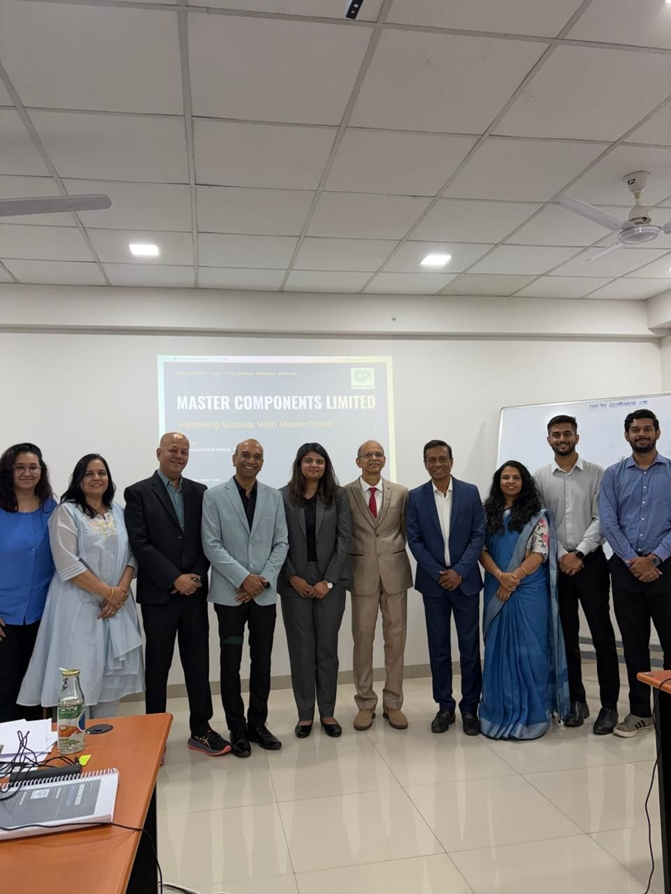
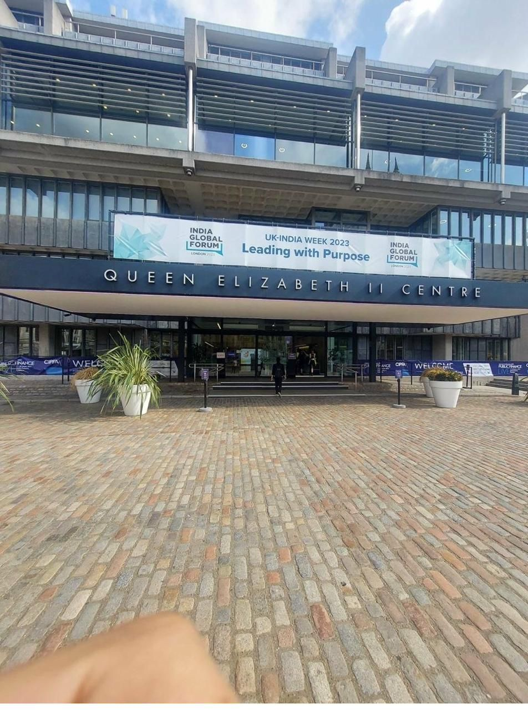

Tanvi JoshiCorporate Affairs & Employee Engagement Lead
Most stuck projects aren’t hard, they’re unowned. I find the gap, own the project and hold the thread until it closes. Then I build the system so it runs without me, check the details so it holds, and bring people along so it lasts.
Departments with an ESG champion each, in one cross-functional team (CFT) on Zero Waste to Landfill: implemented in 3 months, certified in 6. The first MSME in Maharashtra to be certified, now at Gold maturity.
EcoVadis score in a single assessment cycle
Non-conformities in our ISO 14001 and 45001 certification audit
Saved by negotiating the programme’s suppliers and services
Of employees take part in engagement programmes
Growth in company LinkedIn followers, from about 100 to 1,000+
An enabler role touches every department. These are the five areas I run.
Each area below lists the others it feeds. Most of my results come from those links: an audit closes clean because the documents, the people and the data were already in one place.
ESG & Compliance
I run the ESG programme end to end, keep the environmental and occupational health and safety management systems audit-ready all year, and I’m building one integrated system for every certification.
Brought in an external ESG consultant and set up the structured programme.
Zero Waste to Landfill (DIN SPEC 91436, TÜV SÜD). The first MSME in Maharashtra to be certified.
EcoVadis score 55, up from 40 in the first assessment.
Board-approved ESG Committee and Safety Committee. ESG & EHS Policy Manual approved and published. Voluntary BRSR disclosure under SEBI’s guidelines.
Zero non-conformities in the ISO 14001 and ISO 45001 certification audit.
Upgraded to Gold maturity for Zero Waste to Landfill: at least 95% of waste prevented, reused, recycled or composted.
GHG inventory covering Scope 1, 2 and 3, verified to ISO 14064-1 by BSCIC with an NABCB witness audit, at a reasonable level of assurance.
Leading the third EcoVadis assessment.

Zero Waste to Landfill, Gold maturity
At least 95% of operational waste prevented, reused, recycled or composted. The first MSME in Maharashtra to be certified; upgraded from Silver to Gold in 2026.

GHG inventory, independently verified
The 2025 greenhouse gas inventory, covering Scope 1, 2 and 3, verified at a reasonable level of assurance by an NABCB-accredited body.

Environmental management system
Certified for both Nashik units, for the manufacture of plastic moulded components and sub-assemblies. Closed with zero non-conformities.

Occupational health and safety management system
Certified for both Nashik units, in the same integrated audit. Closed with zero non-conformities.
One CFT, eight departments, ₹18L+ saved
I appointed an ESG champion in each of eight departments and formed them into a cross-functional team (CFT). The champions handle the day-to-day ESG work and report to their own department heads, so the heads stay informed without being pulled into daily detail.
- Zero Waste to Landfill implemented in three months and fully certified in six
- More than ₹18 lakh saved by negotiating the programme’s suppliers and services
Management systems that stay audit-ready
I coordinate the environmental (ISO 14001) and occupational health and safety (ISO 45001) management systems, with documentation, records and owners kept current as work happens.
- Certified internal auditor for ISO 14001 and ISO 45001
- Controlled document numbering by department, type, sequence and revision
- Evidence prepared ahead of each audit, so audit day holds no surprises
One Integrated Management System for every certification
Bringing ISO 14001, ISO 45001 and Zero Waste to Landfill together with the quality systems under one set of procedures, records and reviews. On quality (IATF 16949 and ISO 9001), my part is the HR requirements and the system integration. I’m also a certified IATF 16949 internal auditor.
EPR registration
Registered the company with CPCB under Extended Producer Responsibility as an importer of raw material.
Supplier engagement
Ran awareness outreach to suppliers on ZED certification, and coordinate Scope 3 data with internal owners such as purchasing.
ESG compliance, end to end
Every ESG-related compliance sits with me: the evidence, the submissions to ESG auditors and assessors, and the awareness that keeps teams across the plant on track.
People & HR
I run employee engagement end to end and build the HR systems the company runs on, replacing paid software with tools I make myself.
A calendar people look forward to
95% of employees take part in engagement programmes.
- 12 monthly townhalls, recognised by leadership
- The group’s first Sports League, Foundation Day and a leadership dinner
- Employee of the Quarter, recognising people across departments
- Leadership training, a blood donation camp, first aid training, POSH training and Quality Month
- A financial literacy evening with CA Rachana Ranade

Master Premier League
The group’s first sports league, a cricket tournament across the group companies.

Foundation Day
A celebration for the whole company, with teams from every department.

Monthly townhalls
Twelve a year, recognised by leadership, with an activity to get everyone involved.

Blood donation camp
An on-site camp organised for employees to donate.

First aid training
Hands-on training for employees, with a CPR mannequin and the first aid rules in Marathi.

Leadership training
An interactive session for managers and team leads on leading their teams.

Quality Month
A Kaizen competition where teams presented their improvements to a judging panel.

POSH training
Awareness sessions on the prevention of sexual harassment at work.

Financial literacy evening
Har Ghar Investor with CA Rachana Ranade, presented by Master Components in one of Nashik’s largest auditoriums.

Leadership dinner
An evening for the leadership team and their families.
Hiring and onboarding formats
10–15 standard forms, pre-boarding and onboarding checklists and hiring timelines. Onboarding used to take more than 7 days and is now shorter.
One-on-ones, open to all
A structured one-on-one format that any employee can use, for anything they need to raise.
Open Positions system
An automated tracker that takes every requisition form straight into one live list of open positions, with a summary dashboard so HR and senior management can see the hiring pipeline at a glance. It replaces a messy legacy sheet, built in-house instead of buying software.
HR documents revamp
A company-specific HR procedure, an HR Policy Manual modelled on the ESG manual, and one combined Code of Conduct & Ethics.
A 41-point screening framework
A reusable first-round assessment in six parts, plus a 10-point brief for candidates. Used for senior management hires.
Workforce cost benchmarking
Compared employee cost as a share of revenue against listed peers in plastics manufacturing, in three tiers, using published financials.
Leadership
I help design how the organisation works: its structure, its people plans and the systems behind them.
Structure and function design
Designing the organisation’s structure and functions in collaboration with the VP and Strategy Head.
ESOP design
Designing the company’s employee stock option plan with the Company Secretary and the Strategy Head.
Appraisal system design
I lead the design of the company’s appraisal system, supported by my HR team. It will soon cover every employee.
HRMS design
I’ll lead the design of the company’s HRMS, including payroll, supported by my HR team.
Structuring the functions in my own team
As a leader, I’ve structured how the work in my function is owned: safety, ESG and admin each have a dedicated owner. I’m hiring an HR executive for projects and systems, and a management representative for EHS, ESG and IMS.
Committees, reviews and tracking
Set up board-approved ESG and Safety committees, write the impact summary for the Monthly Review Meeting, and track roles, teams and functions in Sheets.
I own corporate branding for Master Group: how it looks, how it reads, and the rules that keep it consistent.
Brand refresh for Master Components Limited
A storytelling-first refresh that improved the company’s branding across digital and printed touchpoints.
- Website revamp, with new design and content: 40% more traffic after the relaunch
- Visiting cards revamped for the leadership team
- A more consistent look across presentations, documents and social media

Brand guidelines revamp
Revamping Master Group’s brand guidelines, including gradient palette sets for presentations and communications.
Branded products
Designed and sourced Master Group merchandise: jerseys, caps, mugs, bottles, laptop bags, coasters and stickers.
Master Group internal portal
One branded self-service page on the local server, next to the ERP, replacing scattered Drive folders.
Communication
I shape what the company says, inside and outside: LinkedIn, emails, newsletters, its annual report and its sustainability reporting.
LinkedIn, 100 to 1,000+
Strategy and content for the company page, which grew from about 100 followers to more than 1,000.
Newsletters
Issued as and when there’s a big update, for employees across the group and for external stakeholders.
Email drafting
Staff announcements, townhall and engagement communications, launch messages and correspondence with external stakeholders.
Annual report
Design the company’s annual report and review the content of its management section, together with the Company Secretary’s team.
Voluntary BRSR disclosure
Prepared the company’s Business Responsibility and Sustainability Report, published voluntarily under SEBI’s guidelines.
30+ decks for leadership
Including the deck for the company’s Annual General Meeting, and leadership pitch decks.

How I got here
I moved to London alone at 17, with more ambition than certainty. Building a life from scratch in a city where nobody knew me taught me to stay steady while everything around me changed, and that confidence doesn’t need to be loud.
Applications, on my own
Handled international university applications myself and received offers of admission from all six universities I applied to across Europe.
Coventry University London
A First-Class degree, earned alongside internships and part-time jobs.
India Global Forum · UK-India Week 2023
Ran speaker onboarding, registrations, guest logistics and social media for a five-day international conference: 150+ high-profile speakers, 1,000+ registrations and 22 sub-events, across 5+ databases in Cvent, Excel and SharePoint.

Natter · Partnerships
Built partnership and influencer strategy for a wellness platform with 190K+ social reach. Evaluated and contacted 100+ influencers and developed 20–30 partnerships.
Master Components Limited, Nashik
Corporate Affairs & Employee Engagement Lead at an NSE-listed manufacturer.
BA (Hons) Global Business Management, First Class
Coventry University London · Sep 2020 – Sep 2023
Course Representative for all three years. Management & HR Society. Marketing plan scored 81/100 and was selected for competition. Wrote my dissertation while working full-time.
How I work
My team says I panic for no reason. They also say the work arrives early. Both are true.
Priorities before panic
When a problem lands, I organise myself before anything else: priorities first, a time target for each, and I delegate what I can’t carry alone. Ideas start in a notebook and only move into a spreadsheet once they make sense.
Early is on time
If I’m delivering, it arrives before the deadline. If I’m waiting on you, I expect it on or before the day. The same goes for meetings: be on time, or you’ll hear from me. Good work needs a good flow, and that runs on respecting everyone’s time.
I’ll find the extra space
I review down to the last detail: a stray space, a misspelt word, a misaligned table. Nothing leaves my desk half-checked.
Know the people before you lead them
When I joined, I learned how every function worked before I asked anyone for anything. Everyone works differently, and understanding that is how I bring people along on projects that aren’t their day job.
“You’re dedicated, honest and result-oriented. You make sure the work crosses the finish line, in its goals and in its purpose.”
A colleague
“You deep-dive into everything you decide to do, and work on it till it’s perfect.”
Another colleague
What fuels me
Ambition, and doing things properly. If I own a task, I deliver it with everything I’ve got, even the ones I don’t love. And events: the more moving parts, the more I enjoy them.
What drains me
Slow processes, slow decisions, and half-hearted work.
Off the clock. Basketball taught me discipline and team instinct, running events taught me to stay calm under pressure, and watching football and tennis keeps my competitive streak healthy.
What I’m working on
- Third EcoVadis assessmentIn motion
- Open Positions tracker and dashboardIn motion
- HR Policy Manual and Code of Conduct & EthicsIn motion
- Appraisal system designIn motion
- HRMS design, including payrollUp next
- One Integrated Management System for all certificationsIn motion
- Master Group brand guidelines revampIn motion
What I work with
Let’s work on something together.
I’m open to roles, collaborations and conversations about ESG, organisational systems, and how companies connect what they do with what they say.